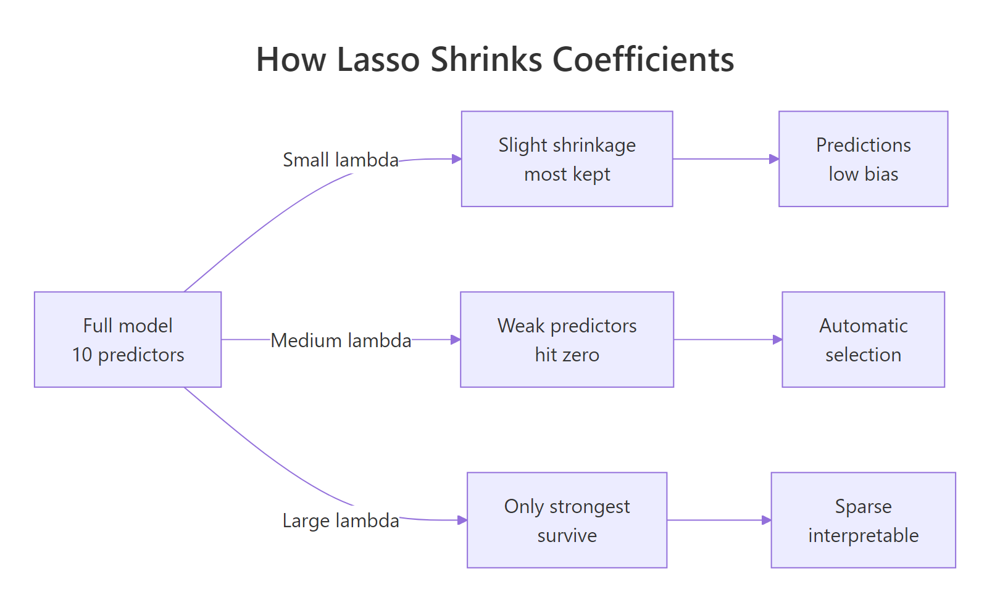
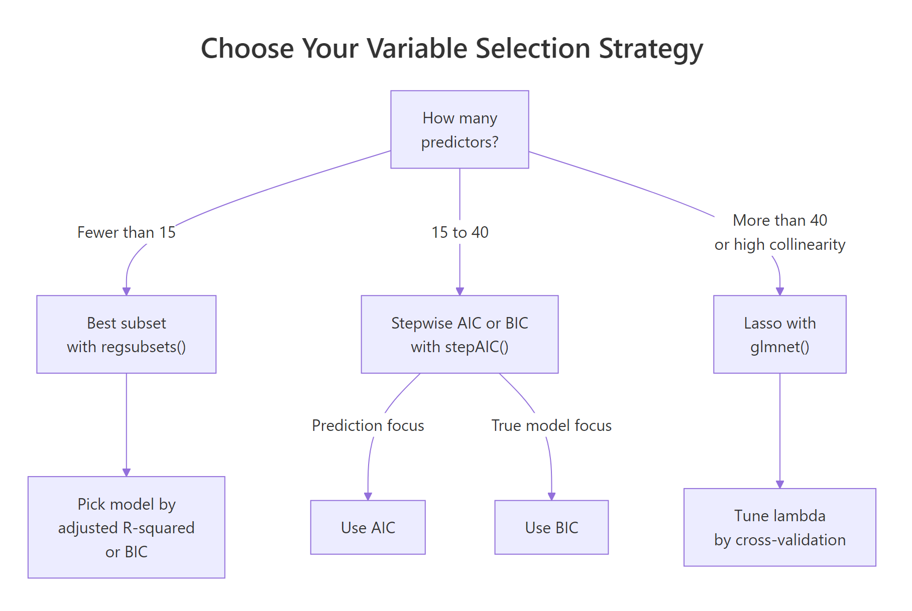
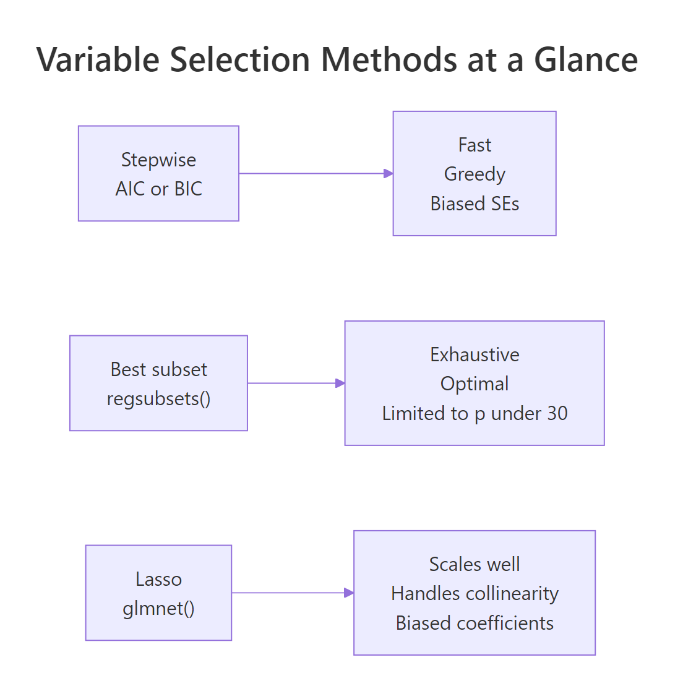

Variable Selection in R: AIC, BIC, and Lasso, Choose Your Strategy Wisely
Variable selection picks the smallest subset of predictors that still explains the outcome well. In R, the three practical strategies are stepwise AIC/BIC via stepAIC(), exhaustive best subset via regsubsets(), and Lasso shrinkage via glmnet(), each with different trade-offs between speed, interpretability, and statistical honesty.
What does "variable selection" actually solve in regression?
You have 10 candidate predictors and a fitted model. Two questions nag: do all of them belong, and which ones can you drop without losing predictive power? Variable selection answers both. The block below fits a full linear model on mtcars and surfaces the first clue that something is wrong, most predictors fail to reach significance.
Look at the p-values. With 10 predictors fighting for explanatory power, only wt comes close to significance, and even it is just at the 0.06 level. This does not mean the others are useless, but it does mean the full model is overfit and hard to interpret. That is the problem variable selection is designed to fix, find the subset of predictors that carry real signal and discard the rest.
Try it: Fit a smaller model lm(mpg ~ wt + hp + qsec, data = mt) and look at the coefficient table. Which coefficient has the highest p-value?
Click to reveal solution
Explanation: qsec has the highest p-value here (0.25), well above 0.05. With only 3 predictors the model is simpler but hp and qsec are now doing less work than they appeared to in the full 10-predictor fit. Variable selection helps you decide formally which of these to keep.
How does stepwise selection with AIC and BIC work in R?
Stepwise selection is the classic, fast answer. The algorithm adds or drops one predictor at a time, greedily, choosing whichever move improves an information criterion the most. Two popular criteria are AIC and BIC, both balance model fit against model size:
$$\text{AIC} = 2k - 2\ln(\hat{L}) \qquad \text{BIC} = k\ln(n) - 2\ln(\hat{L})$$
Where:
- $k$ = number of parameters in the model
- $\hat{L}$ = the maximised likelihood
- $n$ = the sample size
Both penalise extra parameters. The difference is the multiplier. For any sample size larger than about 7, $\ln(n) > 2$, so BIC penalises each added predictor more heavily than AIC does. BIC tends to pick smaller, more parsimonious models.
In R, MASS::stepAIC() handles both. The default uses AIC (k = 2). Switching to BIC means passing k = log(n).
Stepwise AIC kept three predictors: wt, qsec, am. It tried adding or removing each variable and stopped when no single swap improved AIC any further. Now compare what BIC picks on the same data.
On this dataset AIC and BIC land on the same three variables. That is not always the case, when predictors carry weak but non-zero signal, BIC tends to drop them and AIC tends to keep them. Try a larger predictor set (we do this in the first capstone exercise below) and you will see the two criteria diverge.
step() works identically. We use MASS::stepAIC() because its returned object exposes the selection trace ($anova) in a tidy format. For every-day use, step() gives the same final model.Try it: Run stepAIC() with direction = "backward" only, starting from full_mod. Does it land on the same three variables?
Click to reveal solution
Explanation: On mtcars, backward elimination alone reaches the same model as two-way stepwise. On larger or more collinear data you can see divergence, backward elimination sometimes gets trapped because it cannot undo an early mistake.
How does best subset selection find the optimal model?
Stepwise is greedy. Best subset is exhaustive. With p candidate predictors, it fits all $2^p$ possible models, then reports the best one of each size. You then pick a final size using an information criterion.
This matters because stepwise can get stuck in a local optimum, it accepts the best next move, not the globally best subset. Best subset always finds the global winner for each size.
The catch is cost. 10 predictors means 1,024 models. 30 predictors is already a billion. The leaps package keeps it practical by using a branch-and-bound search that avoids enumerating every combination.
bs_sum$which is the core output, a boolean matrix where row k shows which predictors the best k-variable model includes. The single-best 1-variable model uses wt. The best 2-variable model is wt + qsec. The best 3-variable model adds am. Now we need to pick which size is best.
Adjusted R² likes a 5-variable model, BIC and Mallows's Cp both prefer 3 variables. That is the classic tension, adjusted R² is relatively lenient about complexity, while BIC punishes it harder. If you care about parsimony, BIC wins. If you care about squeezing out the last drop of explained variance, adjusted R² wins.
The curve drops sharply to size 3, then flattens. Adding a fourth predictor barely nudges BIC, a fifth actually makes it worse. This "elbow" is what you want visually. When the curve flattens, the marginal predictor is not carrying enough signal to justify its complexity cost.
regsubsets() uses branch-and-bound to skip obviously-bad combinations, but you still pay a heavy cost above ~30 predictors. Above that, switch to Lasso or a forward-only search.Try it: Extract the 3-variable best model from bs_sum$which and refit it with lm(). Confirm the coefficients match what stepAIC() gave above.
Click to reveal solution
Explanation: Best subset and stepwise AIC agree on this problem because mtcars is small enough that stepwise does not get stuck. On larger data the two methods often disagree, that is when best subset's guarantee of global optimality becomes valuable.
How does Lasso select variables by shrinking coefficients to zero?
Lasso takes a completely different route. Instead of picking variables one at a time, it fits all of them at once, but with a penalty that pushes weak coefficients to exactly zero:
$$\underset{\beta}{\text{minimise}} \; \sum_{i=1}^{n}(y_i - x_i^T\beta)^2 + \lambda \sum_{j=1}^{p} |\beta_j|$$
Where:
- $\lambda$ = the penalty strength (larger = more shrinkage)
- $|\beta_j|$ = the absolute value of coefficient $j$ (the "L1 norm")
When $\lambda$ is zero, Lasso is ordinary least squares. As $\lambda$ grows, coefficients shrink. Because of the absolute-value shape of the penalty (the "diamond" rather than a circle), the optimum often lands exactly on a zero-coefficient axis, which is how Lasso selects variables.

Figure 1: How Lasso's L1 penalty shrinks weak coefficients to exactly zero.
glmnet expects a numeric predictor matrix, not a formula, so we build one with model.matrix() and drop the intercept column.
Each line in the plot traces one predictor's coefficient as $\lambda$ increases (moving right). Near the right edge, where $\lambda$ is huge, every coefficient collapses to zero. Near the left edge, where $\lambda$ is small, Lasso mimics OLS. Somewhere in the middle is the sweet spot. Cross-validation finds it.
Two $\lambda$ values matter. lambda.min gives the lowest cross-validated error. lambda.1se gives the simplest model within one standard error of the minimum. For interpretation and reporting, lambda.1se is usually the right choice, it buys extra sparsity at a tiny predicted-error cost.
The dots are exact zeros. At lambda.1se, Lasso keeps just two predictors: cyl and wt. Every other coefficient has been shrunk out of the model. This is the kind of sparse, interpretable output you cannot get from plain OLS, no matter how much you squint at p-values.
lambda.1se when you want a sparser, easier-to-explain model; use lambda.min when prediction is all that matters. On mtcars, lambda.1se kept two variables while lambda.min would keep four. In production forecasting, lambda.min is the conservative choice.lm() on only the predictors Lasso kept.Try it: Fit the same CV model with alpha = 0 (Ridge regression). Inspect the coefficients at lambda.min. How many are exactly zero?
Click to reveal solution
Explanation: Ridge uses an L2 penalty ($\beta^2$ instead of $|\beta|$). Because the L2 penalty is smooth, it shrinks coefficients toward zero but never hits zero exactly. That is why Ridge regularises but does not select, it is a predictive tool, not a variable-selection tool.
Which variable selection strategy should you use?
The honest answer is "it depends on your predictor count, your goal, and your audience." Here is the quick decision map:

Figure 2: A quick decision guide for picking a variable selection method.
To see how they actually differ on the same data, let's build a comparison table.
Every method agrees that wt matters. All three stepwise-style methods add qsec and am. Lasso with lambda.1se is more aggressive, it drops qsec and am but keeps cyl instead. That happens because Lasso penalises coefficient magnitude, not p-value, and cyl has a larger raw effect relative to its standard deviation.
boot::boot() on the full selection + fit pipeline.Try it: From comparison, count how many variables each method kept. Which is the most parsimonious?
Click to reveal solution
Explanation: Lasso at lambda.1se is the sparsest, stepwise AIC, stepwise BIC, and best subset all land on the same 3 variables. If you used lambda.min instead of lambda.1se, Lasso would keep 4 or 5 and the ranking would flip.
Practice Exercises
Exercise 1: AIC vs BIC on a wider candidate set
Extend the mtcars model by adding the interaction wt:hp. Fit the full model, then run stepAIC() with default AIC, then with BIC (k = log(n)). Report both formulas and explain why BIC's is smaller. Save the two fits as my_aic and my_bic.
Click to reveal solution
Explanation: Both keep the wt:hp interaction because the data supports it, but AIC also retains cyl and am, BIC's stricter penalty ($\ln(32) \approx 3.47$ vs AIC's 2) drops them. On larger $n$ that ratio grows, so BIC becomes even more conservative.
Exercise 2: Cross-validated Lasso on airquality
On the airquality dataset, predict Ozone. Drop rows with missing values, build the predictor matrix from the remaining numeric columns, and run cv.glmnet(). Report lambda.min and lambda.1se, and list the surviving predictors at lambda.1se. Save the CV fit as my_cv.
Click to reveal solution
Explanation: At lambda.1se, Lasso keeps Solar.R, Wind, and Temp, which matches physical intuition (ozone responds to sun, wind dispersion, and temperature). Month and Day are zeroed out, they carry seasonality that is already captured by Temp.
Exercise 3: Stability of best subset under resampling
Run regsubsets() once on mtcars. Then resample mtcars with replacement (bootstrap) and run regsubsets() again. Compare the 3-variable model's chosen predictors across the two fits. Save results as my_bs and my_bs_boot.
Click to reveal solution
Explanation: A single bootstrap resample changed the 3-variable "best" model. That instability is exactly why you should report selected variables from many resamples, not from a single fit. Repeated resampling and tallying how often each variable survives (the "selection probability") is a practical robustness check.
Complete Example
Let's run the full workflow end-to-end on mtcars, then fit a final reporting model on the variables Lasso kept.
Two predictors, cyl and wt, give an R² of 0.83. That is remarkably close to the full 10-predictor model's 0.87, with a fraction of the complexity. The takeaway, when you only need the variables that matter most, Lasso's 1se rule often gives you the shortest story that still fits the data.
lm() refit gives unbiased coefficients on the surviving set.* Lasso's original coefficients were shrunk toward zero for prediction. Once you have selected* variables, refitting OLS on just those gives you standard errors and CIs you can actually report, provided you caveat that selection happened on the same data.Summary

Figure 3: Side-by-side strengths and trade-offs across stepwise, best subset, and Lasso.
| Method | R function | Best when | Watch out for |
|---|---|---|---|
| Stepwise AIC | MASS::stepAIC(model) |
15 to 40 predictors, prediction focus | Biased p-values in the final model |
| Stepwise BIC | stepAIC(model, k = log(n)) |
Want parsimonious truth recovery | Can under-select when n is small |
| Best subset | leaps::regsubsets(formula, nvmax) |
Under 30 predictors, strong interpretability | O(2^p) cost, stability under resampling |
| Lasso | glmnet::cv.glmnet(X, y, alpha = 1) |
Many predictors, collinearity | Biased coefficients, scale-sensitive |
Three practical habits separate careful analysts from the rest. First, always standardise predictors before running Lasso, otherwise the L1 penalty acts asymmetrically across scales. Second, re-run selection on a held-out set or bootstrap resamples to see which variables are stable. Third, never report the final model's p-values as if selection had not happened, either refit on new data or use bootstrap confidence intervals.
References
- Hastie, T., Tibshirani, R., Friedman, J. The Elements of Statistical Learning, 2nd ed. Chapters 3.3 and 3.4. Link
- James, G., Witten, D., Hastie, T., Tibshirani, R. An Introduction to Statistical Learning with Applications in R, 2nd ed. Chapter 6. Link
- Venables, W.N., Ripley, B.D.
stepAIC()reference. MASS package documentation. Link - Lumley, T., Miller, A.
regsubsets()reference. leaps package documentation. Link - Friedman, J., Hastie, T., Tibshirani, R.
glmnetvignette, "An Introduction to glmnet." Link - Tibshirani, R. (1996). "Regression Shrinkage and Selection via the Lasso." Journal of the Royal Statistical Society B, 58(1), 267-288. Link
- Harrell, F. Regression Modeling Strategies, 2nd ed. (2015). Chapter 4.3 on stepwise bias.
- Zhang, Y., Shen, X. (2010). "Regularization Parameter Selections via Generalized Information Criterion." Journal of the American Statistical Association. Link
Continue Learning
- Linear Regression Assumptions in R (Link), what to check before you believe any selected model, especially residual diagnostics on the final refit.
- Multiple Regression in R (Link), how the full-model fit you hand to
stepAIC()is built in the first place, plus interpreting multi-predictor coefficients. - Which Regression Model in R (Link), a broader decision framework that picks which kind of regression to fit before you worry about variables.